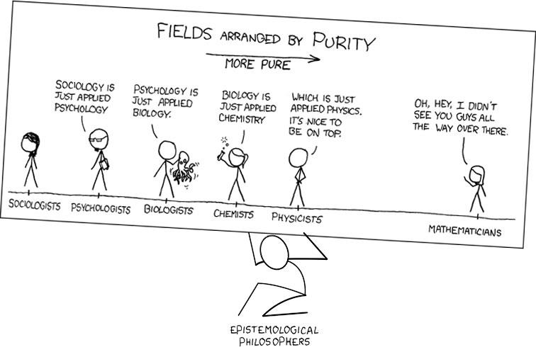

Fields of Knowledge Classified By Respective Metaphysical Existences
Table of Contents
1. Introduction
This is a classification scheme for knowledge that I came up with that I reference a few times in my other blog pages, mainly because the terminology is convenient to use. The idea is that there fields of knowledge can be organized depending on whether the non-existence of the Universe, the Earth, humans, or oneself would cause the knowledge itself to become useless.
The idea behind this schema is that it’s a way to organize fields of knowledge with regards to what that knowledge is relevant to. My individual-centric knowledge wouldn’t be relevant to anything if I never existed, the human-centric sciences wouldn’t have any relevance if humans never existed (although many of them would still be relevant to hypothetical intelligent life on another planet), and Earth-centric knowledge would lose its relevance/usefulness if the Earth stopped existing. However, Universal Sciences remain relevant throughout the entire universe, regardless of whether humans or Earth exist or not at all. I make a lot of references to these terms when I write about my theory of epistemology (still in development).
In epistemology, I’ve formulated a similar structure for thinking about knowledge:
- Individual-centric Knowledge (knowledge that is only relevant to an individual, e.g. their personal identity, life history, ancestral lineage, their own experiences, etc),
- Human-centric Knowledge/Sciences (social skills, anthropology, economics, media arts, world history, linguistics, sexology, technology, epistemology, etc),
- Earth-centric Knowledge/Sciences (e.g. geology, biology, geography, knowledge of the observable universe and Earth’s solar system), and
- Universal Sciences (Mathematics, Physics, Chemistry, Astronomy, Planetary Geology & Biology, Metaphysics)
To an extent, this reminds me of this modified xkcd comicstrip #0435 “Fields Arranged by Purity”: 
Knowledge can be divided up in this way, although there are specialized fields within the more abstract ones. For example, geology is a specialization of physics, psychology is a specialization of biology. We can define types of order: metaphysical / presuppositional, physical, biological, psychological, cultural, social. Each requires its own concepts and theories. Arguably, any field of knowledge requires its own concepts after a certain level of complexity is reached, and those may not be reducible to its parent field’s concepts, lest the field of knowledge be too overwhelming and incognizable. Then there is also personal knowledge, which for each of us is primary. Like your own life story, for example.
2. Higher Than Universal
Higher Than Universal: Knowledge that would still be relevant in a hypothetically Different Universe.
- Philosophy (Metaphysics)
- Mathematics
- Computer Science
3. Universal Sciences
Universal Sciences: Sciences that have universal application and relevance to every location within the Universe.
- Philosophy (Metaphysics)
- Mathematics
- Physics
- Chemistry
- Astronomy
- Planetary Geology & Biology
4. Earth-Centric Sciences
Earth-Centric Sciences: Sciences that have relevance to us only because they are centered around the Earth.
- Knowledge Of The Observable Universe & Our Solar System
- Earth Sciences
- Geology
- Geography
- Biology
5. Human-Centric Sciences
Human-Centric Sciences: Sciences that have relevance to us only because they are centered around humans, but could have some relevance to another intelligent alien civilization.
5.1. Humans Themselves
- Human Survival
- Anthropology
- History
- Cognitive Science
- Psychology
- Linguistics
- Languages
- Sexology
- Human Anatomy
- Neuroscience
- Philosophy (Epistemology)
- Common Sense
5.2. Human Collaboration
- Social Skills
- Sociology
- Political Philosophy
- Communication
- Popular Culture
5.3. Societal Development
- Agriculture
- Housing & Urban Development
- Education/Pedagogy/Andragogy
- Economics
- Business/Commerce
- Food & Culinary Science
- Transportation
- Energy
- Theology
5.4. Technology
- Civil Engineering
- Mechanical Engineering
- Chemical Engineering
- Electrical Engineering
- Computer Science
- Artificial Intelligence
- Medicine & Healthcare
5.5. Arts
- Aesthetics
- Art
- Writing Composition & Literature
- Music
- Theater & Film
- Architecture
6. Individual-Centric Knowledge
Individual-Centric Knowledge is defined as knowledge that only has relevance to a handful of individuals and no one else.
- Culture & Society & Language
- Familial Lineage
- Life History
- Interpersonal Connections
- Intrapersonal Knowledge
- Place Of Residence & Surroundings
- Property & Finances & Belongings
- Occupational Work & Skills
- Hobbies
7. Important Charts For Fields Of Knowledge
- Chemistry - Periodic Table
- Astronomy - Hertzsprung-Russel Diagram
- Geography - World Map
- Geology - Rock Cycle Diagram
- Statistics - Normal Curve Distribution
- Human Anatomy - Human Body Diagram
- Neurology - Human Brain Model
- Quantum Mechanics - Rutherford–Bohr Atomic Model
- Economics - Supply & Demand Curve / Production-Possibilities-Frontier / et cetera
- History - Timelines
- Linguistics - International Phonetic Alphabet Chart
- Music - Western Chromatic Scale